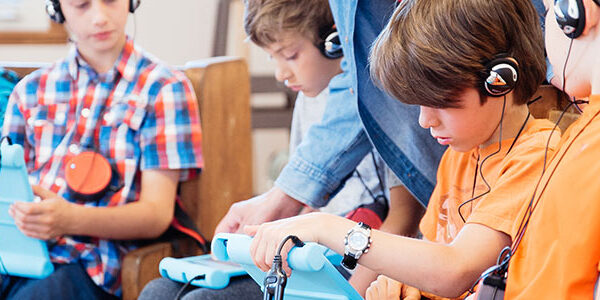
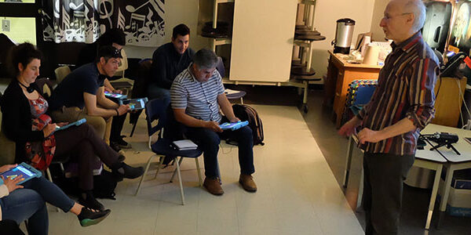
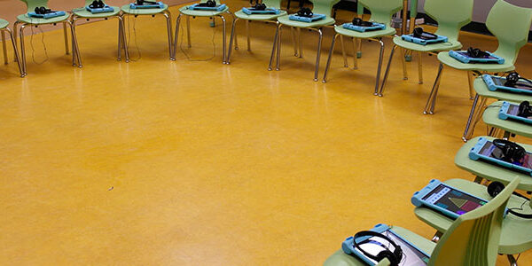

Des outils clé en main pour tous les âges et niveaux

Nos animateurs expérimentés proposent des ateliers de durée et de format variables selon la demande, adaptés à tous les groupes d’âges, du Préscolaire au Secondaire.
COSIMU est au registre du programme Culture à l'école
En apprendre davantage sur les ateliers

Nous offrons pour les enseignants différents formats de formations, en présence réelle et en ligne.
C’est autant d’occasions
En apprendre davantage sur les formations

Si vous ne disposez pas de tablettes, COSIMU peut vous offrir l’équipement complet pour une classe (tablette iPad, casque d’écoute et haut-parleur pour chaque élève) à des tarifs de location très abordables et négociables selon vos besoins.
N’hésitez pas à communiquer avec nous pour une soumission.
«Je recommande fortement ces ateliers à toutes les personnes désirant réaliser des projets de création musicale à l’école. Ils sont adaptés à tous les niveaux d’enseignement, du début primaire jusqu’à la fin du secondaire. Je suis d’ailleurs convaincu qu’ils pourraient même être utilisés à un niveau d’enseignement supérieur. »
— Guy Picard, Coordonnateur au programme Arts-études, école secondaire Casavant